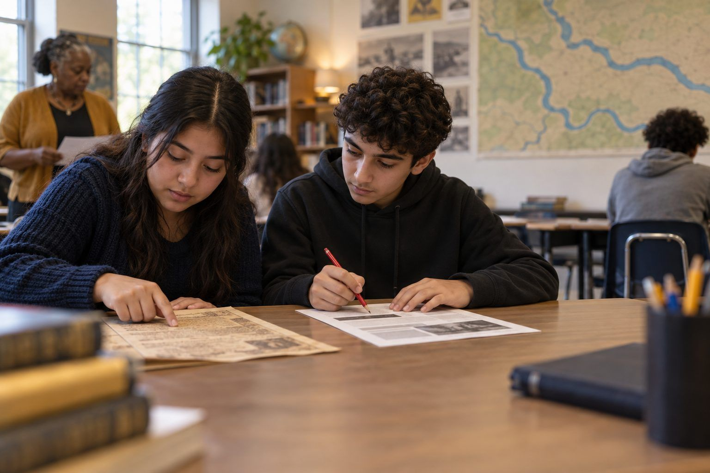

Học tập của học sinh · Lớp 6–8, Lớp 9–12 · 45 phút
Nguồn Gốc và Bản Tóm Tắt Của AI
Học sinh đọc một lá thư năm 1911 rõ ràng là hư cấu, rồi bắt lỗi một bản tóm tắt của AI đã thay đổi ngày tháng, bịa ra một câu trích dẫn, biến một lời đồn thành sự thật, và xóa mất những người hàng xóm đã giúp đỡ.
Các bản tóm tắt của AI nhanh và trôi chảy, nên rất dễ khiến người ta tin. Nhưng một bản tóm tắt chỉ hữu ích khi nó trung thành với nguồn gốc. Học sinh đọc một lá thư theo kiểu nguồn tư liệu gốc (hư cấu, được viết cho bài học này) của một cô bé 13 tuổi kể về trận lụt ở thị trấn của mình, rồi so sánh từng dòng với một bản tóm tắt mô phỏng của AI. Bản tóm tắt nghe có vẻ đúng nhưng chứa sáu chỗ sai lệch: một ngày tháng sai, một chỗ phóng đại, một câu trích dẫn bịa đặt, một lời đồn chưa chắc chắn được nói như sự thật, một chi tiết thêm vào, và một gia đình mà sự giúp đỡ của họ biến mất. Học sinh học được một thói quen mà các nhà sử học vẫn dùng: quay lại nguồn gốc.
Trong bộ tài liệu này
- Phiếu A: Lá thư (bài đọc)
- Phiếu B: Bản tóm tắt của AI (bài đọc)
- Phiếu C: Máy dò sai lệch (sơ đồ tổ chức)
Chỉ báo ELE của TCEA
- AI4.1 Tôi biết cách thúc đẩy kỹ năng tư duy phản biện đối với thông tin do AI tạo ra.
- S2.2 Em có thể nhận biết các nguồn thông tin đáng tin cậy trên internet.
- AI1.3 Tôi nhận thức được những hạn chế hiện tại và các thiên kiến tiềm ẩn trong hệ thống AI.
- S3.2 Em có thể truyền đạt ý tưởng của mình một cách rõ ràng cho người khác.
- T5.1 Tôi biết cách thiết kế bài học thúc đẩy các kỹ năng tư duy bậc cao.
Hướng dẫn đầy đủ cho người điều phối: mglearn.github.io/eles/vi/activities/primary-source-vs-ai-summary.html
Phiếu A cho Nguồn Gốc và Bản Tóm Tắt Của AI
Lá thư
Lá thư này là hư cấu. Nó được viết cho bài học này theo phong cách của một lá thư thật từ năm 1911. Willow Fork và mọi người ở đó đều là tưởng tượng. Hãy đọc lá thư trước khi đọc bất kỳ bản tóm tắt nào.
1¶1 · Willow Fork, ngày 9 tháng 4 năm 1911. Chị Lorena thân mến, em viết thư này dưới ánh đèn dầu vì cuối cùng nước suối cũng đã rút, và mẹ bảo em được dành cả buổi tối để viết thư. Trong thư trước chị có hỏi mưa có đến chỗ nhà em không. Có đấy chị, mà còn hơn thế nữa.
2¶2 · Đêm thứ Ba mưa không ngớt, và đến sáng thì suối Willow Fork đã dâng tràn qua con đường phía dưới và vào sân cối xay. Bố, ông Peterson và vài người đàn ông khác khuân những bao lúa lên gác để giữ cho chúng khô ráo. Nước tràn lên sàn cối xay, cao chừng đến mép giày ống của em. Nhiều hầm chứa trên phố Front bị ngập nước, cả hầm nhà em nữa, và nhà em mất gần hết những hũ đồ mẹ đã làm từ mùa hè năm ngoái.
3¶3 · Nhà em không ở được vì cái hầm và mùi hôi, nên cả nhà lên đồi đến ở nhờ gia đình Castillo. Bà Castillo nhường cho nhà em căn phòng phía trước suốt ba đêm và không chịu lấy một xu nào. Con trai bà, anh Tomás, mười lăm tuổi, đã chèo chiếc thuyền nhỏ xuống trường học cùng cô Hale, và hai người đã mang về tất cả sách của trường trong những bao bột mì trước khi nước dâng tới kệ. Em nghĩ anh ấy là người dũng cảm nhất Willow Fork, dù em sẽ không bao giờ nói với anh ấy như vậy.
4¶4 · Trường đóng cửa bốn ngày. Tạ ơn Chúa, không ai bị thương, nhưng nhà Peterson mất hai con bò bị kẹt lại ở bãi cỏ trũng. Bà Peterson đã khóc khi kể với mẹ, và em cũng khóc.
5¶5 · Một số người ở cửa hàng đang nói rằng con đập mới mà công ty xây ở thượng nguồn vào mùa thu năm ngoái đã khiến nước dâng nhanh hơn. Ông Olsen chắc chắn là như vậy và nói ông sẽ viết thư cho tòa báo. Nhưng bố nói chưa ai biết được, và rằng năm 1899 nước cũng từng dâng cao, khi chưa hề có con đập nào. Em không biết ai đúng.
6¶6 · Em phải thú nhận là đêm thứ Ba em đã rất sợ. Nhưng bây giờ thì chủ yếu là em đã mệt vì lau nhà. Chị viết thư lại cho em sớm nhé, và kể cho em nghe khu vườn của dì Rose có qua khỏi không. Em họ yêu quý của chị, Ada Whitfield (13 tuổi)
Phiếu B cho Nguồn Gốc và Bản Tóm Tắt Của AI
Bản tóm tắt của AI
Phản hồi mô phỏng này được viết cho bài học để cho thấy những loại lỗi mà bản tóm tắt của AI có thể mắc phải. Câu lệnh (prompt): "Tóm tắt lá thư này trong một đoạn văn cho một dự án lịch sử."
1Trong lá thư này, được viết vào tháng 5 năm 1912, một cô bé nông dân tên là Ada Whitfield kể lại một trận lụt kinh hoàng đã tàn phá thị trấn Willow Fork. Trận lụt, do con đập mới xây ở thượng nguồn gây ra, đã buộc các gia đình phải rời bỏ nhà cửa khi nước suối tràn bờ. Bố của Ada và những người hàng xóm khác đã cứu lúa ở cối xay bằng cách khuân lên gác.
2Trường học đóng cửa bốn ngày, và dù không ai bị thương, gia đình Peterson đã mất hai con bò. Ada viết rằng trải nghiệm đó thật kinh hoàng, và nói: "Chúng em đã mất tất cả." Lá thư mang đến một lời kể sống động của người trong cuộc về cách một cộng đồng nhỏ vượt qua thiên tai vào đầu thế kỷ hai mươi.
Phiếu C cho Nguồn Gốc và Bản Tóm Tắt Của AI
Máy dò sai lệch
Các loại sai lệch: Sai chi tiết · Phóng đại · Bịa đặt · Thêm sự chắc chắn · Bỏ sót · Thêm chi tiết. Trích dẫn đoạn (¶) trong lá thư chứng minh điều đó. Các hàng cuối dành cho bản tóm tắt trung thành và quy tắc tóm tắt của em.
| Bản tóm tắt của AI nói gì | Lá thư thực sự nói gì (¶ số) | Loại sai lệch | Vì sao điều này quan trọng |
|---|---|---|---|
| Bản tóm tắt trung thành 3 câu của chúng em: | |||
| Em có thể tin một bản tóm tắt của AI khi… | Em cần quay lại nguồn gốc khi… |